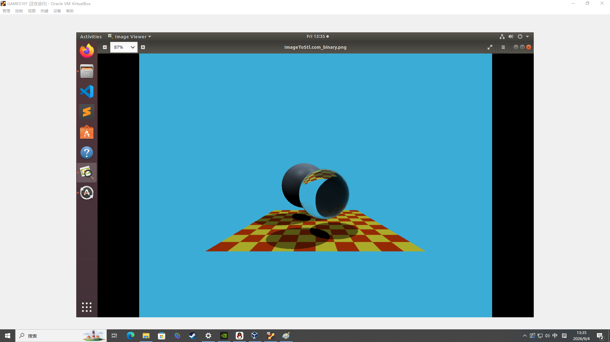
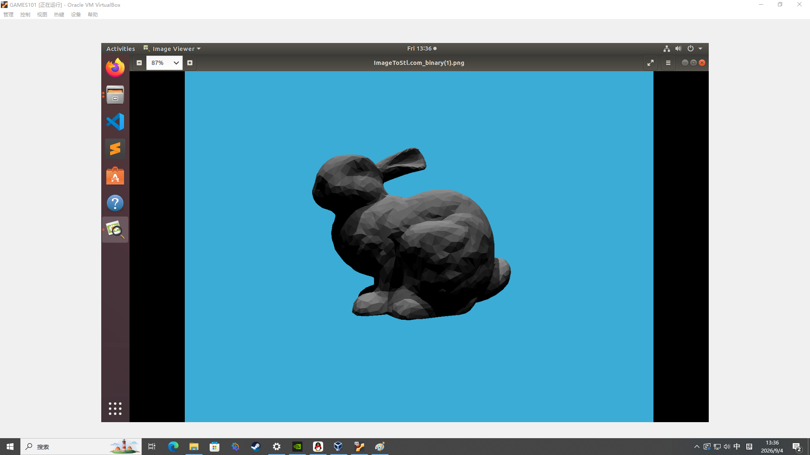
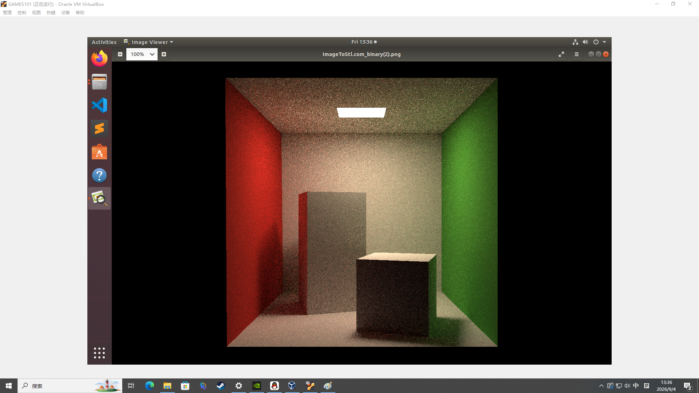

02 / 计算机图形学
GAMES101课程笔记
学习路线
六个方向
- 01-04表示与变换
向量 / 矩阵到模型、相机与投影
- 05-09实时渲染
光栅化、深度、局部光照、纹理与阴影
- 10-12几何处理
网格、曲线曲面、细分和简化
- 13-18离线渲染
光线追踪、加速、光传输与材质
- 19-20成像与颜色
相机、光场、颜色感知与颜色空间
- 21-22运动与模拟
关键帧、弹簧、积分与物理模拟
逐讲笔记
22 讲要点
01-04 / 表示与变换
01计算机图形学概览
- 应用覆盖游戏、电影、动画、设计、可视化、VR/AR、仿真、医学和界面。
- 核心问题是以数学表示三维形状、以物理解释光照、以数值方法处理动画与模拟，并高效生成图像。
- 四条主线：光栅化、曲线和网格、光线追踪、动画与模拟。实时光栅化强调速度，电影级光追强调准确的全局光照。
02线性代数复习
- 向量的长度、单位化、加法和数乘是基本操作。
- 点积
a·b = ||a||||b||cosθ用于夹角、正交性和投影；叉积a×b遵循右手定则，模长对应平行四边形面积。 - 正交归一基、坐标系变换、矩阵乘法和行列式是变换与法线计算的基础。
03二维变换与齐次坐标
- 缩放、旋转、切变可由 2×2 矩阵表示；平移需要齐次坐标。
- 点为
(x,y,1)，向量为(x,y,0)，用 3×3 矩阵统一平移、旋转、缩放和切变。 - 复合变换中右侧先执行；仿射变换保持直线和平行性，欧氏变换还保持距离与角度。
04三维变换、观察与投影
- 三维齐次坐标使用 4×4 矩阵，绕 x/y/z 轴可组合为 Euler 角。
- View 矩阵将相机移到原点、朝向
-Z、上方对齐+Y。 MVP = M_projection M_view M_model后做透视除法；Viewport 将规范立方体映射到屏幕像素。
05-09 / 实时渲染
05光栅化：三角形
- 三角形共面、内部定义明确、顶点属性可插值，是稳定的基本图元。
- 流程：顶点变换 → 三角形装配 → 覆盖测试 → 片元生成 → 深度/颜色写入帧缓冲。
- 常用包围盒遍历与叉积符号测试；可见性需要深度缓冲，而非只依赖绘制顺序。
06抗锯齿与 Z-Buffer
- 采样不足会造成空间锯齿、Moire 与 wagon-wheel 假象；预滤波可抑制混叠。
- MSAA 在单个像素内多点采样后求平均；超采样质量更高但成本更大。
- Z-Buffer 为每个像素存储最小深度，片元通过深度测试才写入颜色。
07光照、着色与图形管线
- Blinn-Phong 局部模型：
L = L_a + L_d + L_s。 - Lambert 漫反射为
L_d ∝ k_d I max(0,n·l)；镜面项使用半程向量h = normalize(l+v)。 - 管线：应用/顶点处理 → 三角形处理 → 光栅化 → 片元着色 → 帧缓冲操作 → 显示。
08着色频率、纹理与重心坐标
- Flat 为每三角形一个法线，Gouraud 插值颜色，Phong 插值法线后逐像素计算光照。
- 重心坐标
α+β+γ=1；属性插值为V=αV_A+βV_B+γV_C。 - 纹理坐标、颜色、法线均可插值；透视投影后需透视校正插值。
09纹理过滤与阴影映射
- 放大可用最近邻、双线性或双三次；缩小时 Mipmap 依 footprint 选择层级并三线性插值。
- 纹理可保存颜色、环境光、法线/高度、程序化数据和体数据。
- Shadow mapping：先从光源渲染深度图，再将可见点投影回光源比较深度；需处理分辨率、自阴影和 bias 伪影。
10-12 / 几何处理
10几何表示与纹理应用
- 隐式表示
f(x,y,z)=0便于求交和内外测试；显式表示包括点云、参数曲线/曲面与网格。 - OBJ 等格式记录顶点、法线、纹理坐标和面索引。
- 环境贴图映射远处光照；高度与法线贴图以低成本模拟细节。
11Bezier 曲线与曲面
- de Casteljau 对控制点反复线性插值，
t∈[0,1]时得到曲线点。 - 曲线端点插值，端点切线沿首尾控制边，曲线位于控制点凸包内。
- Bezier 曲面是二维参数域上的张量积形式；后续包括 B-spline、NURBS、曲面拼接与连续性。
12曲面细分、简化与阴影
- Loop subdivision 用于三角网格；Catmull-Clark 适用于一般网格。
- 网格简化通过 edge collapse 减面，Quadric Error Metric 评估误差并合并代价最小的边。
- 阴影映射依赖光源深度图与光源空间深度比较，仍需处理 aliasing 与 shadow acne。
13-18 / 离线渲染
13Whitted 光线追踪
- 针孔相机为每像素生成射线
r(t)=o+td，取场景最近交点。 - 三角形求交可使用 Möller-Trumbore；递归包含可见性、阴影、镜面反射和折射射线。
- 适合直观表现反射与折射，但不能正确表示漫反射间接光和复杂全局光照。

14加速结构与辐射度量
- AABB 通过三对 slab 求交；空间划分包括均匀网格、BSP/KD-tree 和 Octree。
- BVH 按物体集合递归构建包围盒，通常按最长轴和中位数切分。
- 辐射度量含通量、光强、辐照度、辐亮度；Radiance 是沿射线传输与渲染的核心量。

15光传输与全局光照
- 反射方程：
L_o(p,ω_o)=∫_H f_r L_i cosθ_i dω_i。 - 渲染方程加入自发光
L_e，递归描述多次反弹。 - BRDF 应满足非负、能量守恒与互易性；全局光照通常需要 Monte Carlo 估计。
16Monte Carlo 路径追踪
∫f(x)dx ≈ (1/N)Σ f(X_i)/p(X_i)，误差随1/√N收敛。- 路径追踪从相机出发，按 BRDF 采样新方向并累积 throughput。
- Russian roulette 以概率终止长路径并补偿权重；重要性采样比均匀半球采样更有效。

17材质与 BRDF
- Lambert 为均匀漫反射；镜面反射遵循反射定律；折射遵循 Snell 定律。
- Fresnel 表示反射率随入射角变化，掠射角反射更强。
- Microfacet 由法线分布、Fresnel 和几何遮蔽项共同决定，可描述粗糙度与各向异性。
18高级光传输与外观
- 无偏方法有 BDPT、MLT；Photon Mapping、VCM 属于有偏但一致的方法。
- Photon Mapping 从光源发射并存储 photon，再在相机路径的邻域做密度估计。
- 高级外观包括参与介质、头发、半透明 BSSRDF、布料、颗粒和程序化材质。
19-20 / 成像与颜色
19相机、镜头与光场
- 成像包含合成与捕获；针孔模型投影空间点，透镜通过折射聚焦。
- 焦距与传感器尺寸共同决定 FOV；快门控制运动模糊，光圈与焦距影响照度和景深。
- 光场记录位置加方向的光线集合，可用于重聚焦、视点合成和计算摄影。
20颜色与视觉感知
- 颜色是视觉系统对光谱的感知；S/M/L 视锥细胞的响应构成三刺激值。
- sRGB 是常用设备色彩空间；CIE XYZ 覆盖可见颜色，
Y表示亮度；CIELAB 近似感知均匀。 - 显示器采用 RGB 加色混合，印刷采用 CMYK 减色；不同光谱可产生相同感知颜色，称为同色异谱。
21-22 / 运动与模拟
21动画与弹簧系统
- 动画是随时间变化的场景模型；关键帧之间可用 spline 或 easing 生成平滑中间帧。
- 物理动画以力和质量产生加速度，适用于布料、绳、头发和流体。
- Hooke 弹簧：
F=-k(|x|-l_0)n；阻尼模拟能量损失，并应作用于相对伸缩速度。
22数值积分、刚体与流体
- 单粒子 ODE：
dx/dt=v、dv/dt=a(x,v,t)；显式 Euler 简单但会累计误差。 - 半隐式 Euler、Verlet 和 RK 可改善稳定性与精度；四元数可避免 Euler 角万向节锁。
- 流体模拟基于质量守恒、动量方程和不可压约束，常见路径包括 SPH 与 Navier-Stokes 网格法。
速查
公式与实践
高频公式与算法
- 变换
MVP右乘先执行；p_ndc=p_clip/w- 漫反射
max(0,n·l)- 重心坐标
α+β+γ=1；属性按αA+βB+γC插值- 射线
r(t)=o+td，取最小正根- 渲染方程
L_o=L_e+∫ f_r L_i cosθ dω- Monte Carlo
I≈(1/N)Σ f(X_i)/p(X_i)
作业 / 实践对照
- HW0 - 变换与基础框架
- HW1 - 光栅化与旋转三角形
- HW2 - Z-Buffer
- HW3 - Blinn-Phong、插值与纹理
- HW4 - Whitted 光线追踪
- HW5 - 辐射度量 / 光传输
- HW6 - AABB、BVH 加速结构
- HW7 - Monte Carlo 路径追踪
术语索引
affine transformation 仿射变换 · aliasing 混叠 · BRDF 双向反射分布函数 · BVH 层次包围盒 · barycentric coordinates 重心坐标 · Fresnel 菲涅耳项 · frustum 视锥体 · irradiance 辐照度 · radiance 辐亮度 · rasterization 光栅化 · rendering equation 渲染方程 · shadow mapping 阴影映射 · subdivision 曲面细分 · texture filtering 纹理过滤 · z-buffer 深度缓冲